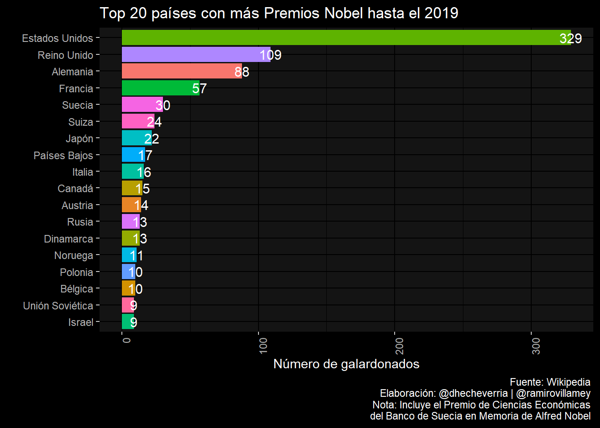
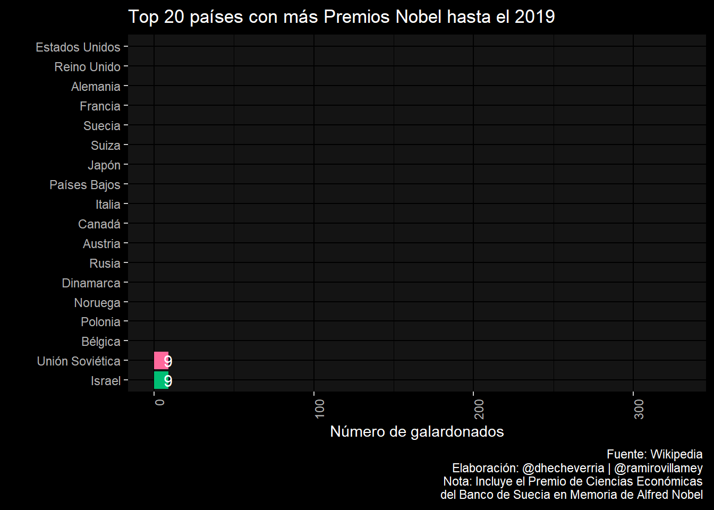

En esta entrada compartiré los códigos y resultados del reto #30díasdegráficos con R organizado por R para Ciencia de Datos que tuvo lugar desde el 2 de mayo de 2020. Esta iniciativa de la comunidad hispanohablante de R fue en conmeración de Florence Nightingale. Los gráficos los desarrollé con Ramiro Villarruel, bajo la cuenta de la Soluciones Analíticas y Económicas, con quienes colaboro.
La comunidad de usuarios que participó en este reto fue espectucular, me permito sugerir que visiten las también páginas de estos usuarios:
Esto hace parte fundamental de un curso de visualización de datos con R que he desarrollado bajo el enfoque de la gramática de gráficos de ggplot.
Base de datos: Premios nobel por país y disciplina tomado de wikipedia
Pais <- c("Estados Unidos","Reino Unido","Francia","Canadá","Noruega","Alemania","India","Países Bajos","Suecia","Austria","Chipre","Finlandia","Israel","Italia","Polonia","Rusia","Unión Soviética","Estados Unidos","Alemania","Reino Unido","Francia","Rusia","Países Bajos","Japón","Suiza","Suecia","Italia","Dinamarca","Austria","Canadá","Taiwán","China","Bélgica","Hungría","India","Irlanda","Pakistán","Polonia","Estados Unidos","Alemania","Reino Unido","Francia","Suiza","Japón","Israel","Canadá","Suecia","Países Bajos","Polonia","India","Argentina","Bélgica","Dinamarca","Finlandia","Italia","Nueva Zelanda","Noruega","Austria","Unión Soviética","México","Hungría","Checoslovaquia","Australia","Egipto","Turquía","Estados Unidos","Reino Unido","Alemania","Francia","Suecia","Suiza","Australia","Dinamarca","Austria","Bélgica","Japón","Italia","Argentina","Rusia","Canadá","España","Países Bajos","Noruega","China","Portugal","Venezuela","Sudáfrica","Hungría","India","Irlanda","Luxemburgo","Nueva Zelanda","Polonia","Francia","Estados Unidos","Alemania","Reino Unido","Suecia","Italia","España","Unión Soviética","Irlanda","Polonia","Dinamarca","Noruega","Chile","Grecia","Japón","Sudáfrica","Suiza","Perú","Austria","Bélgica","Bielorrusia","Canadá","Checoslovaquia","China","Colombia","Egipto","Finlandia","Guatemala","Hungría","India","Islandia","Israel","México","Nigeria","Australia","Portugal","Rumania","Santa Lucía","Turquía","Yugoslavia","Estados Unidos","Reino Unido","Francia","Suecia","Alemania","Sudáfrica","Bélgica","Suiza","Israel","Austria","Canadá","Unión Soviética","Argentina","Bangladés","Liberia","Egipto","Timor Oriental","Noruega","India","Países Bajos","Etiopía","Japón","Guatemala","Italia","México","Dinamarca","Kenia","Costa Rica","Vietnam nota 4
","Irlanda","Birmania (o Myanmar)","Palestina","Corea del Sur","Ghana","Irán","Yemen","China","Polonia","Finlandia","Pakistán","Rumania","Tíbet","Túnez","Colombia","Irak","República Democrática del Congo","Naciones Unidas u otras Organizaciones Internacionales")
Numero <- c(48,9,4,3,3,2,2,2,2,1,1,1,1,1,1,1,1,88,25,23,12,10,9,8,6,4,4,3,3,3,2,2,1,1,1,1,1,1,65,31,27,7,7,7,4,4,4,3,1,1,1,1,1,1,1,1,1,1,1,1,1,1,1,1,1,96,30,16,10,8,6,6,5,5,4,4,3,2,2,2,2,2,2,1,1,1,1,1,1,1,1,1,1,15,12,10,8,7,6,5,5,4,5,3,3,2,2,2,2,2,1,2,1,1,1,1,1,2,1,1,1,1,1,1,1,1,1,1,1,1,1,1,1,20,12,9,5,4,4,3,3,3,2,2,2,2,2,2,2,2,2,2,1,1,1,1,1,1,1,1,1,1,1,1,1,1,1,1,1,1,1,1,1,1,1,1,1,1,1,23)
Disciplina <- c("Economía","Economía","Economía","Economía","Economía","Economía","Economía","Economía","Economía","Economía","Economía","Economía","Economía","Economía","Economía","Economía","Economía","Física","Física","Física","Física","Física","Física","Física","Física","Física","Física","Física","Física","Física","Física","Física","Física","Física","Física","Física","Física","Física","Química","Química","Química","Química","Química","Química","Química","Química","Química","Química","Química","Química","Química","Química","Química","Química","Química","Química","Química","Química","Química","Química","Química","Química","Química","Química","Química","Fisiología o Medicina","Fisiología o Medicina","Fisiología o Medicina","Fisiología o Medicina","Fisiología o Medicina","Fisiología o Medicina","Fisiología o Medicina","Fisiología o Medicina","Fisiología o Medicina","Fisiología o Medicina","Fisiología o Medicina","Fisiología o Medicina","Fisiología o Medicina","Fisiología o Medicina","Fisiología o Medicina","Fisiología o Medicina","Fisiología o Medicina","Fisiología o Medicina","Fisiología o Medicina","Fisiología o Medicina","Fisiología o Medicina","Fisiología o Medicina","Fisiología o Medicina","Fisiología o Medicina","Fisiología o Medicina","Fisiología o Medicina","Fisiología o Medicina","Fisiología o Medicina","Literatura","Literatura","Literatura","Literatura","Literatura","Literatura","Literatura","Literatura","Literatura","Literatura","Literatura","Literatura","Literatura","Literatura","Literatura","Literatura","Literatura","Literatura","Literatura","Literatura","Literatura","Literatura","Literatura","Literatura","Literatura","Literatura","Literatura","Literatura","Literatura","Literatura","Literatura","Literatura","Literatura","Literatura","Literatura","Literatura","Literatura","Literatura","Literatura","Literatura","Paz","Paz","Paz","Paz","Paz","Paz","Paz","Paz","Paz","Paz","Paz","Paz","Paz","Paz","Paz","Paz","Paz","Paz","Paz","Paz","Paz","Paz","Paz","Paz","Paz","Paz","Paz","Paz","Paz","Paz","Paz","Paz","Paz","Paz","Paz","Paz","Paz","Paz","Paz","Paz","Paz","Paz","Paz","Paz","Paz","Paz","Paz")
premios.nobel <- data.frame(Pais,Numero,Disciplina)Procesamiento de la base de datos formato tidydata
library(tidyverse)## -- Attaching packages --------------------------------------- tidyverse 1.3.0 --## v ggplot2 3.3.2 v purrr 0.3.4
## v tibble 3.0.4 v dplyr 1.0.2
## v tidyr 1.1.2 v stringr 1.4.0
## v readr 1.4.0 v forcats 0.5.0## -- Conflicts ------------------------------------------ tidyverse_conflicts() --
## x dplyr::filter() masks stats::filter()
## x dplyr::lag() masks stats::lag() premios.nobel2 <- spread(data = premios.nobel, key = Disciplina, value = Numero)
premios.nobel2[is.na(premios.nobel2)] = 0
premios.nobel2$Total <- apply(premios.nobel2[,2:7],1,sum)
premios.nobel3<- premios.nobel2[-40,]
premios.nobel4 <- subset(premios.nobel3,premios.nobel3$Total>8)Gráfico de barras
library(ggplot2)
library(ggdark)
p<-ggplot(premios.nobel4, aes(x= reorder (Pais, Total), y=Total, fill=Pais,label=Total)) +
geom_bar(stat="identity") +labs(title = "Top 20 países con más Premios Nobel hasta el 2019",
caption="Fuente: Wikipedia \nElaboración: @dhecheverria | @ramirovillamey \nNota: Incluye el Premio de Ciencias Económicas \n del Banco de Suecia en Memoria de Alfred Nobel ",y="Número de galardonados",x="")+
dark_theme_gray()+
theme(legend.position="none",axis.text.x = element_text(angle = 90, hjust = 1))+
coord_flip()+
geom_text(data=premios.nobel4,
aes(Pais, Total, label=Total),
position = position_stack(vjust =1),
size=4)## Inverted geom defaults of fill and color/colour.
## To change them back, use invert_geom_defaults(). p
library(gganimate)
p+transition_states(Total, wrap = FALSE) +
shadow_mark()
p + transition_states(
Total,
transition_length = 5,
state_length = 1) +
enter_fade() +
exit_shrink() +
ease_aes('sine-in-out')